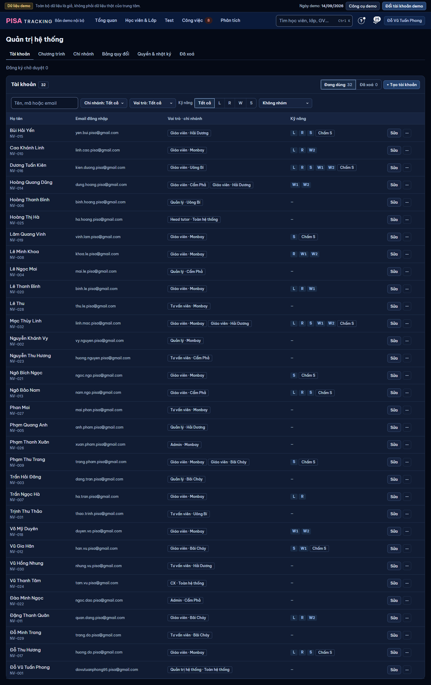
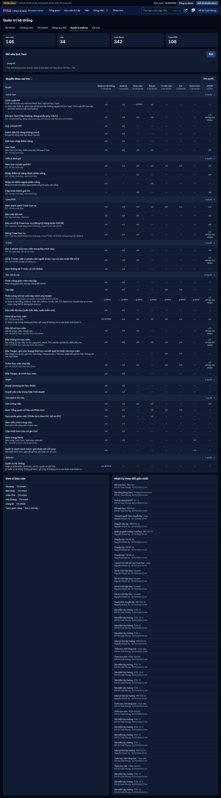
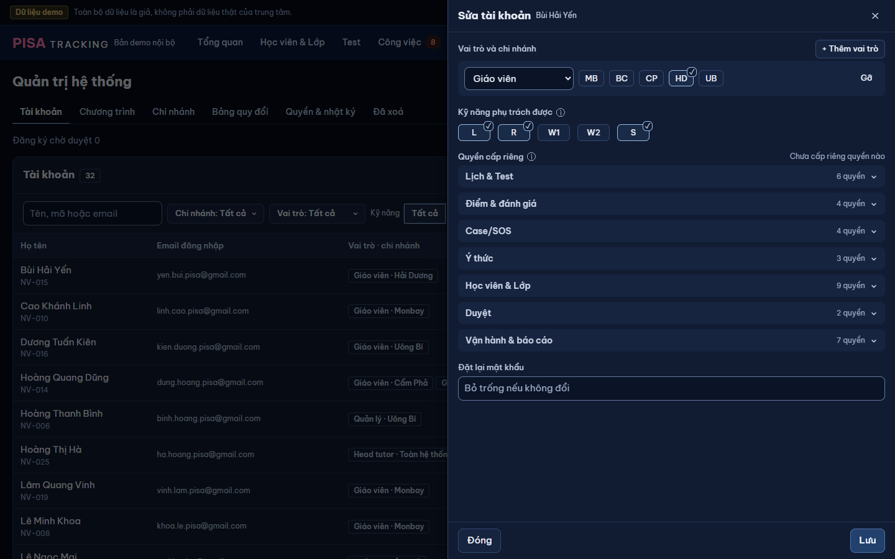

Lời chủ SP 11/11: "overhaul lại TOÀN BỘ giao diện trong quản trị hệ thống để mọi thứ gọn gàng hơn, dễ sử dụng hơn, dễ nhìn hơn" · "đổi vai của các tài khoản, cập nhật vai trò và quyền hạn" ·
"phần để xử lý tất cả các vấn đề liên quan đến hệ thống: lộ trình, các loại lớp, band điểm, luật lệ hạn mặc định, case, phân loại case, nguyên nhân, phương án quy chế".
Đặc tả: docs/superpowers/specs/2026-11-11-quan-tri-v2-design.md. Dữ liệu: seed, ngày demo 14/09/2026, vai Quản trị = Đỗ Vũ Tuấn Phong, QL = Lê Ngọc Mai (Cẩm Phả).
1440 tối · 375 sáng (+ một khung 375 tối). Case & SOS: mockup riêng thiet-ke/2026-11-11-cau-hinh-case-sos/ (lắp vào ô "Case & SOS" của khung này).
Vấn đề: 6 tab ngang trộn người · quyền · cấu hình · vận hành; "Quyền & nhật ký" dài 5 166 px (4 ô đếm + công tắc + ma trận 8 cột + nhật ký); Chương trình lẫn lộ trình FT;
hạn, ngưỡng %, kỳ vọng band không có chỗ xem / sửa; đổi vai phải mở panel 720 px. Ảnh đầy đủ: anh/truoc-*.png.



1Cột trái 3 nhóm thay 6 tab · 2bấm ô "Vai trò · chi nhánh" → popover neo ô (không panel 720 px); mỗi lần cấp một hàng Vai ▾ · Chi nhánh ▾ · ✕, "+ Thêm vai", Lưu · 3bấm chip kỹ năng → popover L R W1 W2 S (như nay ở panel Sửa) · Sửa / ⋯ giữ nguyên (panel cũ: quyền cấp riêng, mật khẩu; Sửa thông tin, Xoá). Một đăng ký chờ duyệt (thêm vào seed để vẽ trạng thái) — badge số ở cột trái.
Lưu → chip đổi tại chỗ, dòng viền nhấn, toast "✓ Đã đổi vai · Hoàn tác". Lỗi (gỡ Quản trị cuối, vai thiếu chi nhánh) → popover KHÔNG đóng, lỗi ngay dưới hàng, giữ lựa chọn.
Trái: 7 vai + GVCN (tự có theo chủ nhiệm, chỉ đọc) · phải: quyền của vai đang chọn, nhóm theo 8 nhóm sẵn có; mô tả quyền vào ⓘ (bỏ 1–3 dòng chữ dưới tên). Bỏ chế độ "Sửa quyền": bấm thẳng công tắc → "đổi" + dải dưới "n thay đổi · ảnh hưởng m tài khoản · Huỷ · Lưu" → hộp xác nhận (giữ UX-C7). "So sánh mọi vai" = ma trận cũ (chỉ đọc).
Nhóm Lớp thường: Tên, Đạt từ sửa tại dòng; môn / mốc / độ dài → khung phải (như panel cũ). Nhóm Fast Track · lộ trình: bấm dòng → khung phải sửa lịch MT (thay chỗ cột Nhật ký). "Áp cho lớp mở sau" — lớp đang chạy giữ bản chụp. Không thêm mã lộ trình (K1-48).
Bấm giá trị → sửa tại dòng (n ngày, hoặc thứ + tuần). Đổi chỉ áp cho việc sinh sau (tra bản có hiệu lực lúc việc sinh). Hàng đã khác gốc: chữ nhấn + "gốc: … · Về gốc" (hàng Meeting CX = ví dụ đã đổi 5 → 7 ngày để vẽ trạng thái; ngày đầu mọi hàng = bản gốc). Cột phải: nhật ký mục này, "Khôi phục về đây".
Kỳ vọng band theo MT (MT1 Target − 1.0 …) và ngưỡng % cuối khoá lần đầu có chỗ xem / sửa; Bảng quy đổi giữ nguyên thành phần (Sửa 41 ô một lượt, Hoàn tác, phiên bản) — lịch sử phiên bản vào cột Nhật ký.
QL thấy cả nhóm Cấu hình hệ thống + Đã xoá; không nút sửa / Về gốc / Khôi phục; dòng "Chỉ xem · Quản trị hệ thống sửa". Máy chủ 403 với mọi PUT.
375 không tab vuốt: /quan-tri = mục lục 3 nhóm; vào mục có "‹ Quản trị". Bảng → danh sách hai dòng, chạm dòng → hộp toàn màn, Lưu cố định dưới.
| Thao tác | Trước | Sau | |
|---|---|---|---|
| Duyệt / Không duyệt / Duyệt lại đăng ký | Tài khoản, đầu tab | Tài khoản, đầu mục; badge số ở cột trái | GIỮ |
| Tìm · lọc chi nhánh / vai / kỹ năng · nhóm theo · chip thiếu · Đang dùng / Đã xoá | Tài khoản | Tài khoản (URL giữ bộ lọc) | GIỮ |
| Đổi vai / chi nhánh | Sửa → panel 720 → chọn → Lưu (4 bấm) | Bấm ô vai → popover → chọn → Lưu (4 bấm, không rời bảng) · panel Sửa vẫn có | TẠI CHỖ |
| Kỹ năng phụ trách | panel Sửa | popover tại chip + panel Sửa | TẠI CHỖ |
| Quyền cấp riêng · đặt lại mật khẩu | panel Sửa | panel Sửa | GIỮ |
| Sửa thông tin · Xoá · Khôi phục · + Tạo tài khoản | ⋯ / nút | ⋯ / nút | GIỮ |
| Đổi quyền theo vai | cuộn → Sửa quyền → ô → Lưu → xác nhận | Quyền theo vai → chọn vai → công tắc → Lưu → xác nhận | GỌN |
| Xem ma trận mọi vai | luôn hiện | "So sánh mọi vai" | GIỮ |
| Sửa lộ trình FT · lịch MT | Chương trình › Sửa › panel | Chương trình & lộ trình › bấm dòng › khung phải | GIỮ |
| Sửa chương trình lớp thường · + Chương trình | Chương trình › Sửa › panel | Tên, Đạt từ tại dòng; còn lại khung phải | GIỮ |
| Sửa chi nhánh | Sửa › panel | tại dòng | TẠI CHỖ |
| Bảng quy đổi · Hoàn tác · khôi phục phiên bản | tab Bảng quy đổi | Band & ngưỡng › Bảng quy đổi; phiên bản ở cột Nhật ký | GIỮ |
| Bật / tắt Mở sửa lịch Test | Quyền & nhật ký | Vận hành › Mở sửa lịch Test (chip "Đang mở" ở cột trái) | GIỮ |
| Khôi phục thứ đã xoá | Đã xoá | Vận hành › Đã xoá | GIỮ |
| Xem nhật ký | 50 dòng cuối Quyền & nhật ký | cột Nhật ký từng mục cấu hình + Nhật ký chung có lọc | GIỮ |
| Đơn vị báo cáo | Quyền & nhật ký | Chi nhánh (chỉ đọc) | GIỮ |
| 4 ô đếm Học viên / Lớp / Lượt / Case | Quyền & nhật ký | — | BỎ — không thao tác, đã có ở Tổng quan; bớt 4 câu COUNT(*) |
| Sửa hạn mặc định · kỳ vọng FT · ngưỡng lớp thường | — (viết cứng) | Hạn mặc định · Band & ngưỡng | MỚI |
| QL xem cấu hình | chỉ Bảng quy đổi | mọi mục Cấu hình hệ thống, chỉ xem | MỚI |
| Ý | Ở đâu trong mockup | |
|---|---|---|
| "gọn gàng hơn" | 6 tab → cột trái 3 nhóm; trang 5 166 px tách thành Quyền theo vai · Mở sửa lịch · Nhật ký chung; bỏ 4 ô đếm; mô tả quyền vào ⓘ (K1, K3, K8) | ĐẠT |
| "dễ sử dụng hơn" | đổi vai tại dòng (K1), bỏ chế độ Sửa quyền (K3), sửa tại dòng ở mọi mục cấu hình + Hoàn tác (K4–K7) | ĐẠT |
| "dễ nhìn hơn" | một mẫu cho mọi mục (đầu mục · bảng · nhật ký cột phải); một vai một cột thay 8 cột "có / —" | ĐẠT |
| "đổi vai của các tài khoản" | K1, K2, K11b | ĐẠT |
| "cập nhật vai trò và quyền hạn" | K3 (vai → quyền), panel Sửa giữ quyền cấp riêng | ĐẠT |
| "lộ trình" | K4 nhóm Fast Track · lộ trình (lịch MT) | ĐẠT |
| "các loại lớp" | K4 nhóm Lớp thường (+ Chương trình) | ĐẠT |
| "band điểm" | K6: kỳ vọng FT, ngưỡng lớp thường, bảng quy đổi | [XM-1] ngưỡng % Final |
| "luật lệ hạn mặc định" | K5: 14 hạn, giá trị = mã hiện tại, áp cho việc sinh sau | ĐẠT |
| "case, phân loại case, nguyên nhân, phương án quy chế" | ô "Case & SOS" trong cột trái → mockup CAU-HINH-CASE-SOS (cùng mẫu) | ĐẠT (session kia) |
| "mỗi mục một trang con cùng một mẫu" | K4–K9 cùng: đầu mục · Áp cho … sinh sau ⓘ · bảng V21 · sửa tại dòng · Hoàn tác · nhật ký 320 px | ĐẠT |
| "đổi chỉ áp cho cái sinh sau; đang dùng chỉ tạm ẩn" | dòng "Áp cho … sinh sau ⓘ" mọi mục; Tạm ẩn ở Chương trình & lộ trình (K4) | ĐẠT |
| "chỉ Quản trị sửa, QL xem" | K9 | ĐẠT |
| Không khoá cứng · Hoàn tác + khôi phục | toast Hoàn tác (K2, K5), "Khôi phục về đây" ở nhật ký (K5, K8b) | ĐẠT |
| Đọc ít dòng | đặc tả mục 8: mở mục ≤ 3 câu; bỏ /admin/overview (bớt ~600 dòng mỗi lần mở Quyền) | ĐẠT |